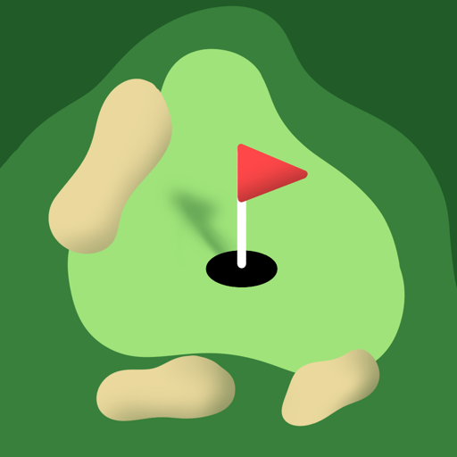

Fairway U
Take over a college golf program, recruit your team, ride along and call every shot, and chase a national title before your seat gets too hot.
Contact support
Found a bug, lost a purchase or have an idea? Email sevenredbry@gmail.com. Include your device model, iOS version and what you were doing when it happened. A screenshot helps a lot.
FAQ
My purchase isn't showing up.
Tap Restore beside Remove Ads on the main menu. Make sure you're signed in to the App Store with the same Apple Account you bought with.
What does Remove Ads do?
The game shows one ad, right before a new season starts. Remove Ads turns it off for good. It's a one-time purchase and covers every career.
Do I need an internet connection?
No. If an ad can't load, the new season just starts. You need a connection to buy or restore Remove Ads.
How is an event scored?
Five golfers play for each team and the best four scores count in every round. The lowest team total wins. In match play, two teams play five singles matches and the first to three points wins.
Can I leave in the middle of a round?
Yes. Choose Save and leave, then use the orange Continue tile on the Dashboard to pick up where you left off.
What does the ? beside a shot mean?
Your golfer doesn't have that shot yet. You can still call it, but they'll be less comfortable and more likely to miss. Each golfer's page lists their Shots in the bag, and a medalist can be taught a new one.
Why can't I hit the putts?
Putting is automatic. The card shows the slope, the distance and the chance of making it, based on your golfer's putting.
Why did I get fired?
Your athletic director judges each season against what's expected of the program. Falling short heats up the hot seat, and staying there can cost you the job. You can take another one from the Job Board.
Can I play women's golf?
Yes. Choose Men's or Women's when you start a career.
Can I play more than one career?
Yes. Start a new career from the main menu; each one is saved separately. Touch and hold a career to delete it.
Are these real teams and courses?
Every program, golfer and coach is fictional. Course layouts are built from OpenStreetMap data, changed for the game and given fictional names. See Course data.
More help is in the game: tap the ⋯ menu on the Dashboard, then Help.